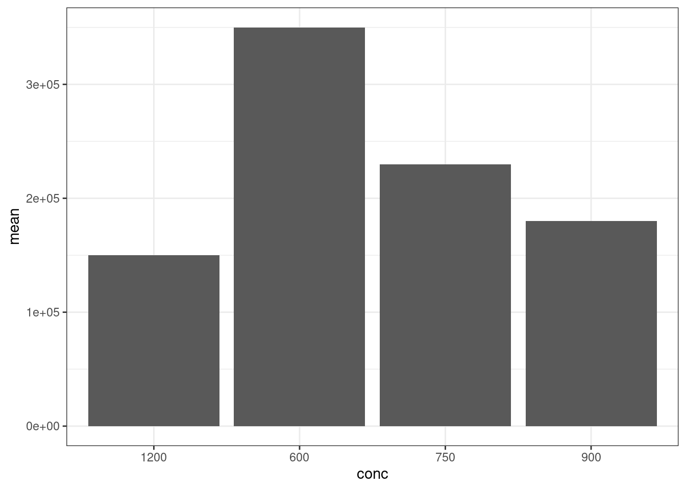

library(tidyverse)## ── Attaching packages ─────────────────────────────────────── tidyverse 1.3.0 ──## ✓ ggplot2 3.3.3 ✓ purrr 0.3.4
## ✓ tibble 3.1.0 ✓ dplyr 1.0.5
## ✓ tidyr 1.1.3 ✓ stringr 1.4.0
## ✓ readr 1.4.0 ✓ forcats 0.5.1## ── Conflicts ────────────────────────────────────────── tidyverse_conflicts() ──
## x dplyr::filter() masks stats::filter()
## x dplyr::lag() masks stats::lag()library(readxl)
destdir <- "download/"
filenames <- dir(path = destdir, pattern = "*.xlsx")
full_filenames <- paste0(destdir, "/", filenames)
sapply(full_filenames, file.remove)## download//aputron_partdb.xlsx download//gpemelianov_partdb.xlsx
## TRUE TRUE
## download//hayleykim97_partdb.xlsx download//jinjulee119_partdb.xlsx
## TRUE TRUE
## download//Lelp27_partdb.xlsx download//seokjin-oh_partdb.xlsx
## TRUE TRUE
## download//treebird19_partdb.xlsx
## TRUEids <- c("hayleykim97",
"th-kim310",
"Lelp27",
"aputron",
"gpemelianov",
"yoo-bh",
"seokjin-oh",
"treebird19",
"jinjulee119"
)
destdir <- "download/"
igem_team_cols <- c("id", "team_name", "project", "year", "wiki")
igem_part_cols <- c("id", "BBid", "type", "link", "backbone", "device_id", "team_id", "user")
igem_device_cols <- c("id", "device_name", "part_combination")
igem_obs_cols <- c("id", "strain", "indc", "conc", "concunit", "value", "valunit", "incubhr", "incubtemp", "device_id", "link")for(i in 1:length(ids)){
url <- paste0("https://github.com/", ids[i], "/", "researcheweb", "/raw/main/", destdir, "partdb.xlsx")
destfile <- paste0(destdir, ids[i], "_partdb.xlsx")
tempfile <- paste0(destdir, "temp_", ids[i], "_partdb.xlsx")
## check the rules
## ===============================================
flag <- TRUE
try(download.file(url, tempfile, quiet = TRUE), silent=TRUE)
#tryCatch(download.file(url, tempfile, quiet = TRUE), error=function(e){})
if(!file.exists(tempfile)){
print(paste0(i, " ID:", ids[i], " No excel file\n"))
flush.console()
}else{
tmp <- read_excel(tempfile, sheet = 1, skip = 0, col_names = T)
igem_cols <- igem_team_cols
if(length(names(tmp))==length(igem_cols)){
if(!isTRUE(all.equal(names(tmp), igem_cols))){
print(paste(i, ids[i], " check column names in the igem_team sheet"))
flush.console()
flag <- FALSE
}
}else{
print(paste(i, ids[i], " check the number of columns in the igem_team sheet"))
flush.console()
flag <- FALSE
}
tmp <- read_excel(tempfile, sheet = 2, skip = 0, col_names = T)
igem_cols <- igem_part_cols
if(length(names(tmp))==length(igem_cols)){
if(!isTRUE(all.equal(names(tmp), igem_cols))){
print(paste(i, ids[i], " check column names in the igem_part sheet"))
flush.console()
flag <- FALSE
}
}else{
print(paste(i, ids[i], " check the number of columns in the igem_part sheet"))
flush.console()
flag <- FALSE
}
tmp <- read_excel(tempfile, sheet = 3, skip = 0, col_names = T)
igem_cols <- igem_device_cols
if(length(names(tmp))==length(igem_cols)){
if(!isTRUE(all.equal(names(tmp), igem_cols))){
print(paste(i, ids[i], " check column names in the igem_device sheet"))
flush.console()
flag <- FALSE
}
}else{
print(paste(i, ids[i], " check the number of columns in the igem_device sheet"))
flush.console()
flag <- FALSE
}
tmp <- read_excel(tempfile, sheet = 4, skip = 0, col_names = T)
igem_cols <- igem_obs_cols
if(length(names(tmp))==length(igem_cols)){
if(!isTRUE(all.equal(names(tmp), igem_cols))){
cat(i, ids[i], " check column names in the igem_obs sheet\n")
flush.console()
flag <- FALSE
}
}else{
print(paste(i, ids[i], " check the number of columns in the igem_obs sheet"))
flush.console()
flag <- FALSE
}
if(flag){
try(download.file(url, destfile, quiet = TRUE))
cat(i, ids[i], " ........... OK\n");flush.console()
}
file.remove(tempfile)
}
## ===============================================
cat("\n");flush.console()
}## Warning in download.file(url, tempfile, quiet = TRUE): cannot open URL 'https://
## github.com/hayleykim97/researcheweb/raw/main/download/partdb.xlsx': HTTP status
## was '404 Not Found'## [1] "1 ID:hayleykim97 No excel file\n"## Warning in download.file(url, tempfile, quiet = TRUE): cannot open URL 'https://
## github.com/th-kim310/researcheweb/raw/main/download/partdb.xlsx': HTTP status
## was '404 Not Found'## [1] "2 ID:th-kim310 No excel file\n"
##
## 3 Lelp27 ........... OK
##
## 4 aputron ........... OK
##
## 5 gpemelianov ........... OK
##
## 6 yoo-bh check column names in the igem_obs sheet
##
## 7 seokjin-oh ........... OK
##
## 8 treebird19 ........... OK
##
## 9 jinjulee119 ........... OKlibrary(magrittr)##
## Attaching package: 'magrittr'## The following object is masked from 'package:purrr':
##
## set_names## The following object is masked from 'package:tidyr':
##
## extract## 다운로드 받은 엑셀 파일들
filenames <- dir(path = destdir, pattern = "*_partdb.xlsx")
tmp1 <- list()
tmp2 <- list()
tmp3 <- list()
tmp4 <- list()
tmp5 <- list()
tmp6 <- list()
tmp7 <- list()
for(i in 1:length(filenames)) {
destfile <- paste0(destdir, filenames[i])
tmp <- read_excel(destfile, sheet = 1, skip = 0, col_names = T)
tmp %<>% mutate(across(!where(is.character), as.character))
## add filename
tmp1[[i]] <- tmp %>% mutate(filename=filenames[i])
tmp <- read_excel(destfile, sheet = 2, skip = 0, col_names = T)
tmp %<>% mutate(across(!where(is.character), as.character))
tmp2[[i]] <- tmp %>% mutate(filename=filenames[i])
tmp <- read_excel(destfile, sheet = 3, skip = 0, col_names = T)
tmp %<>% mutate(across(!where(is.character), as.character))
tmp3[[i]] <- tmp %>% mutate(filename=filenames[i])
tmp <- read_excel(destfile, sheet = 4, skip = 0, col_names = T)
tmp %<>% mutate(across(!where(is.character), as.character))
tmp4[[i]] <- tmp %>% mutate(filename=filenames[i])
}
igem_team <- do.call(bind_rows, tmp1)
igem_part <- do.call(bind_rows, tmp2)
igem_device <- do.call(bind_rows, tmp3)
igem_obs <- do.call(bind_rows, tmp4)library(tidyverse)
## new id
tmpdat <- igem_part %>%
left_join(igem_team, by=c("team_id"="id", "filename"="filename"))
tmpdat %>% str## tibble[,13] [53 × 13] (S3: tbl_df/tbl/data.frame)
## $ id : chr [1:53] "1" "2" "3" "4" ...
## $ BBid : chr [1:53] "BBa_R0011" "BBa_C0012" "BBa_B0054" "BBa_R0011" ...
## $ type : chr [1:53] "Promoter" "GFP" "Terminator" "Promoter" ...
## $ link : chr [1:53] "http://parts.igem.org/Part:BBa_R0011" "http://parts.igem.org/Part:BBa_C0012" "http://parts.igem.org/Part:BBa_B0054" "http://parts.igem.org/Part:BBa_R0011" ...
## $ backbone : chr [1:53] "pSB1C3" "pSB1C3" "pSB1C3" "pCDF" ...
## $ device_id: chr [1:53] "1" "1" "1" "2" ...
## $ team_id : chr [1:53] "1" "1" "1" "2" ...
## $ user : chr [1:53] "aputron" "aputron" "aputron" "aputron" ...
## $ filename : chr [1:53] "aputron_partdb.xlsx" "aputron_partdb.xlsx" "aputron_partdb.xlsx" "aputron_partdb.xlsx" ...
## $ team_name: chr [1:53] "ZJU-China" "ZJU-China" "ZJU-China" "UCSF" ...
## $ project : chr [1:53] "PaDetector, a household device for HPV preliminary screening" "PaDetector, a household device for HPV preliminary screening" "PaDetector, a household device for HPV preliminary screening" "OperationCRISPR" ...
## $ year : chr [1:53] "2019" "2019" "2019" "2013" ...
## $ wiki : chr [1:53] "https://2019.igem.org/Team:ZJU-China" "https://2019.igem.org/Team:ZJU-China" "https://2019.igem.org/Team:ZJU-China" "http://2013.igem.org/Team:UCSF" ...tmpdat <- igem_part %>%
full_join(igem_team, by=c("team_id"="id", "filename"="filename")) %>%
select(id, BBid, type, backbone, device_id, user, filename, team_name, year) %>%
drop_na()
tmpdat %>% str## tibble[,9] [48 × 9] (S3: tbl_df/tbl/data.frame)
## $ id : chr [1:48] "1" "2" "3" "4" ...
## $ BBid : chr [1:48] "BBa_R0011" "BBa_C0012" "BBa_B0054" "BBa_R0011" ...
## $ type : chr [1:48] "Promoter" "GFP" "Terminator" "Promoter" ...
## $ backbone : chr [1:48] "pSB1C3" "pSB1C3" "pSB1C3" "pCDF" ...
## $ device_id: chr [1:48] "1" "1" "1" "2" ...
## $ user : chr [1:48] "aputron" "aputron" "aputron" "aputron" ...
## $ filename : chr [1:48] "aputron_partdb.xlsx" "aputron_partdb.xlsx" "aputron_partdb.xlsx" "aputron_partdb.xlsx" ...
## $ team_name: chr [1:48] "ZJU-China" "ZJU-China" "ZJU-China" "UCSF" ...
## $ year : chr [1:48] "2019" "2019" "2019" "2013" ...tmpdat2 <- igem_obs %>%
full_join(igem_device, by=c("device_id"="id", "filename"="filename")) %>%
drop_na()
tmpdat2 %>% str## tibble[,14] [44 × 14] (S3: tbl_df/tbl/data.frame)
## $ id : chr [1:44] "1" "2" "3" "4" ...
## $ strain : chr [1:44] "E.coli" "E.coli" "E.coli" "E.coli" ...
## $ indc : chr [1:44] "Arabinose" "Arabinose" "Arabinose" "Arabinose" ...
## $ conc : chr [1:44] "0.02" "0.2" "2" "0" ...
## $ concunit : chr [1:44] "mM" "mM" "mM" "mM" ...
## $ value : chr [1:44] "3000" "8200" "8000" "250" ...
## $ valunit : chr [1:44] "Fluorescence" "Fluorescence" "Fluorescence" "a.u." ...
## $ incubhr : chr [1:44] "12" "12" "12" "4" ...
## $ incubtemp : chr [1:44] "NA" "NA" "NA" "37" ...
## $ device_id : chr [1:44] "1" "1" "1" "2" ...
## $ link : chr [1:44] "https://2020.igem.org/Team:Jilin_China/Proof_Of_Concept" "https://2020.igem.org/Team:Jilin_China/Proof_Of_Concept" "https://2020.igem.org/Team:Jilin_China/Proof_Of_Concept" "https://2019.igem.org/Team:BHSF_ND/Project/Leakage#ct3" ...
## $ filename : chr [1:44] "gpemelianov_partdb.xlsx" "gpemelianov_partdb.xlsx" "gpemelianov_partdb.xlsx" "gpemelianov_partdb.xlsx" ...
## $ device_name : chr [1:44] "D0001" "D0001" "D0001" "D0002" ...
## $ part_combination: chr [1:44] "1,2,3,4" "1,2,3,4" "1,2,3,4" "5,6" ...tmpdat %>%
filter(BBid=="BBa_R0040")## # A tibble: 1 x 9
## id BBid type backbone device_id user filename team_name year
## <chr> <chr> <chr> <chr> <chr> <chr> <chr> <chr> <chr>
## 1 10 BBa_R0… promot… PSB3C5 3 JinjuL… jinjulee119_… Fudan 20198-1. 수집
finaldat <-tmpdat2 %>%
mutate(partcomb = lapply(strsplit(tmpdat2$part_combination, split=","), as.numeric)) %>%
filter(unlist(lapply(partcomb, function(x){5 %in% x})) & filename=="hayleykim97_partdb.xlsx")
finaldat %>% str## tibble[,15] [0 × 15] (S3: tbl_df/tbl/data.frame)
## $ id : chr(0)
## $ strain : chr(0)
## $ indc : chr(0)
## $ conc : chr(0)
## $ concunit : chr(0)
## $ value : chr(0)
## $ valunit : chr(0)
## $ incubhr : chr(0)
## $ incubtemp : chr(0)
## $ device_id : chr(0)
## $ link : chr(0)
## $ filename : chr(0)
## $ device_name : chr(0)
## $ part_combination: chr(0)
## $ partcomb : list()8-2. 수집
finaldat <-tmpdat2 %>%
mutate(partcomb = lapply(strsplit(tmpdat2$part_combination, split=","), as.numeric)) %>%
filter(unlist(lapply(partcomb, function(x){14 %in% x})) & filename=="hayleykim97_partdb.xlsx")
finaldat %>% str## tibble[,15] [0 × 15] (S3: tbl_df/tbl/data.frame)
## $ id : chr(0)
## $ strain : chr(0)
## $ indc : chr(0)
## $ conc : chr(0)
## $ concunit : chr(0)
## $ value : chr(0)
## $ valunit : chr(0)
## $ incubhr : chr(0)
## $ incubtemp : chr(0)
## $ device_id : chr(0)
## $ link : chr(0)
## $ filename : chr(0)
## $ device_name : chr(0)
## $ part_combination: chr(0)
## $ partcomb : list()8-3. 수집
finaldat <-tmpdat2 %>%
mutate(partcomb = lapply(strsplit(tmpdat2$part_combination, split=","), as.numeric)) %>%
filter(unlist(lapply(partcomb, function(x){23 %in% x})) & filename=="hayleykim97_partdb.xlsx")
finaldat %>% str## tibble[,15] [0 × 15] (S3: tbl_df/tbl/data.frame)
## $ id : chr(0)
## $ strain : chr(0)
## $ indc : chr(0)
## $ conc : chr(0)
## $ concunit : chr(0)
## $ value : chr(0)
## $ valunit : chr(0)
## $ incubhr : chr(0)
## $ incubtemp : chr(0)
## $ device_id : chr(0)
## $ link : chr(0)
## $ filename : chr(0)
## $ device_name : chr(0)
## $ part_combination: chr(0)
## $ partcomb : list()8-4. 수집
finaldat <-tmpdat2 %>%
mutate(partcomb = lapply(strsplit(tmpdat2$part_combination, split=","), as.numeric)) %>%
filter(unlist(lapply(partcomb, function(x){28 %in% x})) & filename=="hayleykim97_partdb.xlsx")
finaldat %>% str## tibble[,15] [0 × 15] (S3: tbl_df/tbl/data.frame)
## $ id : chr(0)
## $ strain : chr(0)
## $ indc : chr(0)
## $ conc : chr(0)
## $ concunit : chr(0)
## $ value : chr(0)
## $ valunit : chr(0)
## $ incubhr : chr(0)
## $ incubtemp : chr(0)
## $ device_id : chr(0)
## $ link : chr(0)
## $ filename : chr(0)
## $ device_name : chr(0)
## $ part_combination: chr(0)
## $ partcomb : list()8-5. 수집
finaldat <-tmpdat2 %>%
mutate(partcomb = lapply(strsplit(tmpdat2$part_combination, split=","), as.numeric)) %>%
filter(unlist(lapply(partcomb, function(x){10 %in% x})) & filename=="jinjulee119_partdb.xlsx")
finaldat %>% str## tibble[,15] [4 × 15] (S3: tbl_df/tbl/data.frame)
## $ id : chr [1:4] "1" "2" "3" "4"
## $ strain : chr [1:4] "E. coli Nissle 1917" "E. coli Nissle 1917" "E. coli Nissle 1917" "E. coli Nissle 1917"
## $ indc : chr [1:4] "tet" "tet" "tet" "tet"
## $ conc : chr [1:4] "600" "750" "900" "1200"
## $ concunit : chr [1:4] "ng/㎕" "ng/㎕" "ng/㎕" "ng/㎕"
## $ value : chr [1:4] "350000" "230000" "180000" "150000"
## $ valunit : chr [1:4] "MEFL/particle" "MEFL/particle" "MEFL/particle" "MEFL/particle"
## $ incubhr : chr [1:4] "7" "7" "7" "7"
## $ incubtemp : chr [1:4] "37" "37" "37" "37"
## $ device_id : chr [1:4] "3" "3" "3" "3"
## $ link : chr [1:4] "https://2019.igem.org/Team:Fudan/" "https://2019.igem.org/Team:Fudan/" "https://2019.igem.org/Team:Fudan/" "https://2019.igem.org/Team:Fudan/"
## $ filename : chr [1:4] "jinjulee119_partdb.xlsx" "jinjulee119_partdb.xlsx" "jinjulee119_partdb.xlsx" "jinjulee119_partdb.xlsx"
## $ device_name : chr [1:4] "D0003" "D0003" "D0003" "D0003"
## $ part_combination: chr [1:4] "10,11,12,13" "10,11,12,13" "10,11,12,13" "10,11,12,13"
## $ partcomb :List of 4
## ..$ : num [1:4] 10 11 12 13
## ..$ : num [1:4] 10 11 12 13
## ..$ : num [1:4] 10 11 12 13
## ..$ : num [1:4] 10 11 12 13plotdat <- finaldat %>%
select(-c(id, link, filename, part_combination, partcomb)) %>%
mutate(value = as.numeric(value))
plotdat %>% str## tibble[,10] [4 × 10] (S3: tbl_df/tbl/data.frame)
## $ strain : chr [1:4] "E. coli Nissle 1917" "E. coli Nissle 1917" "E. coli Nissle 1917" "E. coli Nissle 1917"
## $ indc : chr [1:4] "tet" "tet" "tet" "tet"
## $ conc : chr [1:4] "600" "750" "900" "1200"
## $ concunit : chr [1:4] "ng/㎕" "ng/㎕" "ng/㎕" "ng/㎕"
## $ value : num [1:4] 350000 230000 180000 150000
## $ valunit : chr [1:4] "MEFL/particle" "MEFL/particle" "MEFL/particle" "MEFL/particle"
## $ incubhr : chr [1:4] "7" "7" "7" "7"
## $ incubtemp : chr [1:4] "37" "37" "37" "37"
## $ device_id : chr [1:4] "3" "3" "3" "3"
## $ device_name: chr [1:4] "D0003" "D0003" "D0003" "D0003"datasummary <- plotdat %>%
group_by(indc, conc) %>%
summarise(mean=mean(value), n=n()) ## `summarise()` has grouped output by 'indc'. You can override using the `.groups` argument.ggplot(datasummary, aes(x=conc, y=mean)) +
geom_bar(stat="identity") +
theme_bw()